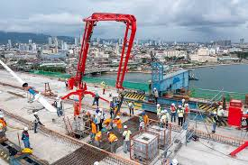

Improving Transportation in Cebu
With the growing population and increasing demand for efficient transportation systems, Cebu's government has focused on improving road infrastructure and public transport networks to ensure better mobility and access for its residents.
Key Transportation Projects
- Cebu-Cordova Link Expressway (CCLEX)
- Expansion of the Public Bus System
- Improvement of Traffic Management Systems
The construction of the Cebu-Cordova Link Expressway (CCLEX) improves connectivity between Cebu City and nearby areas, reducing travel time.
This vital infrastructure project enhances economic opportunities, promotes tourism, and supports the region’s overall growth and development.
The expansion of the public bus system to cover more areas enhances accessibility and reduces traffic congestion in urban regions.
providing reliable transportation options, this initiative improves mobility and promotes sustainable commuting for residents.
The improvement of traffic management systems to reduce congestion helps ensure smoother travel and better air quality in urban areas.
advanced technologies and better planning can significantly alleviate traffic jams and improve overall city mobility.

Future Transportation Goals
- Development of New Mass Transit Systems
- Improvement of Public Transportation Safety and Efficiency
- Upgrading Road Networks to Support Economic Growth
The development of new mass transit systems to reduce traffic provides a more efficient and sustainable mode of transportation for commuters.
These systems help alleviate congestion, reduce pollution, and promote the use of public transport over private vehicles.
The improvement of public transportation safety and efficiency ensures a more reliable and secure travel experience for passengers.
By investing in modern infrastructure and technology, cities can enhance the overall effectiveness of their public transport systems.
Upgrading road networks to support economic growth facilitates smoother transportation of goods and people across regions.
road infrastructure enhances connectivity, boosting trade, tourism, and overall development in both urban and rural areas.
